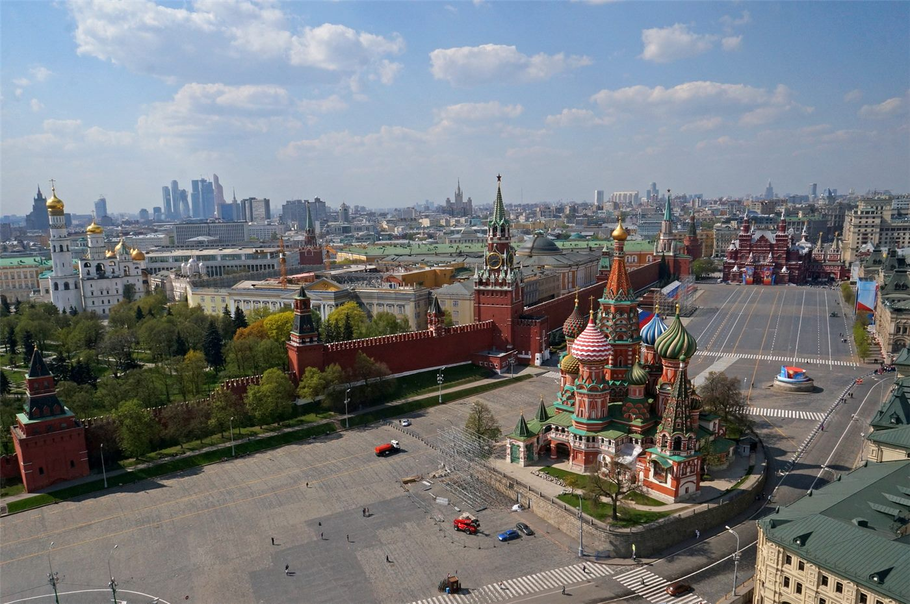

트럼프 “1월 초까지 러·우 종전 합의”…민주당 의회 장악 前 시간표 압박

도널드 트럼프 미국 행정부가 러시아·우크라이나 전쟁을 끝낼 평화협정을 내년 1월 초까지 마무리하겠다는 목표를 유럽과 우크라이나 당국자들에게 전달한 것으로 전해졌다. 영국 파이낸셜타임스(FT)는 협상 내용을 보고받은 소식통 4명을 인용해 20일(현지시간) 이같이 보도했고, 경향신문 등 국내 언론도 21일 이를 일제히 전했다. 백악관은 FT의 논평 요청에 응하지 않았다.
광고 문의 · 300×250‘1월 초’라는 시점에는 미국 국내 정치 일정이 깊이 얽혀 있다. 공화당은 지난 3일 중간선거에서 상·하원을 모두 내줬고, 새 의회는 1월 3일 출범한다. 민주당은 우크라이나 지원 확대와 대러 압박 강화, 그리고 협상을 이끌어 온 스티브 위트코프 특사와 재러드 쿠슈너의 사업 이해관계에 대한 의회 조사를 예고해 왔다. 의회 구도가 바뀌기 전에 성과를 확정하려는 계산이 깔려 있다는 분석이 나오는 이유다.
미국의 시간표와 협상 경로
협상의 실무 축은 위트코프·쿠슈너 두 특사다. 이들은 이달 10~11일 아랍에미리트 아부다비에서 러시아와 우크라이나 대표단을 한자리에 모았다. 이란 전쟁으로 외교가 얼어붙은 올해 2월 이후 처음 열린 직접 협상이었지만, 손에 잡히는 결과는 대규모 포로 교환 정도에 그쳤다. 두 특사는 이후 모스크바에서 블라디미르 푸틴 대통령을, 더블린에서 볼로디미르 젤렌스키 대통령을 잇달아 만나며 ‘시한’을 강조한 것으로 알려졌다.
트럼프 대통령은 20일 기자회견에서 푸틴 대통령이 일대일 대화에서 외교를 통한 종전을 원한다고 말했다고 전했다. 우크라이나에 대한 안전보장 문제를 묻는 질문에는 “우선 합의가 먼저”라는 취지로 답했다. 다만 FT에 따르면 미국은 아직 우크라이나에 구체적인 양보안을 요구하지는 않았으며, 트럼프 대통령 역시 영토나 안보 측면에서 어떤 양보를 원하는지 공개적으로 밝힌 적이 없다.
러시아 “서두를 것 없다”…키이우·유럽은 경계
러시아는 시한에 얽매이지 않겠다는 입장이다. 푸틴 대통령은 이번 주 우크라이나와 유럽이 “타협”과 “현실”을 받아들여야 한다고 말했다. 러시아가 요구해 온 조건은 돈바스 지역 양도, 우크라이나의 나토(NATO) 가입 포기, 군사력 제한 등이며, 아부다비 협상에서는 나토 군사 기반시설을 1997년 수준으로 되돌리자는 제안까지 내놓았다. 세르게이 랴브코프 외무차관은 20일 나토 헌장 5조를 본뜬 안전보장을 포함해 우크라이나의 어떤 ‘준(準)회원국’ 지위도 받아들일 수 없다고 못박았다. 드미트리 페스코프 크렘린궁 대변인은 유럽 대표단의 모스크바 방문 일정에 대해 “아직 구체적인 날짜는 없다”고 말했다.
우크라이나는 시한이 오히려 러시아에 유리한 조건을 안겨 줄 수 있다고 우려한다. 한 우크라이나 고위 당국자는 FT에 “트럼프는 푸틴을 좋아하고 1월까지 끝내고 싶어 한다”며 그 전에 합의가 이뤄지면 러시아가 더 나은 조건을 얻을 수 있다고 말했다. 젤렌스키 대통령은 미국 CNN 인터뷰에서 푸틴을 친구로 묘사하는 트럼프 대통령의 표현을 거부하며 “우리에게 그는 여전히 살인자”라고 했다.
유럽의 시선도 복잡하다. 한 유럽 당국자는 “미국은 서두르지만 푸틴은 그렇지 않다”고 했고, 다른 당국자는 합의를 위해 우크라이나가 상당한 양보를 강요당할 수 있다고 걱정했다. 프리드리히 메르츠 독일 총리는 러시아가 “외교적 시간 끌기”를 멈추고 진지하게 협상에 나서야 한다고 촉구했고, 유럽연합(EU)은 유럽평화기금을 통해 우크라이나에 10억 유로 규모의 군사 지원을 승인했다.
전장의 긴장은 오히려 높아지고 있다. 러시아는 19일 밤부터 20일 새벽 사이 키이우의 드니프로강 다리 세 곳을 공습했고, 젤렌스키 대통령은 이번 공격으로 전국에서 8명이 숨졌다고 밝혔다. 협상 시한을 둘러싼 미국의 조급함과 러시아의 버티기, 유럽·우크라이나의 경계가 맞물리면서 1월 초 타결 목표가 현실화할지는 여전히 불투명하다.
· 경향신문
· Financial Times
· Il Sole 24 Ore